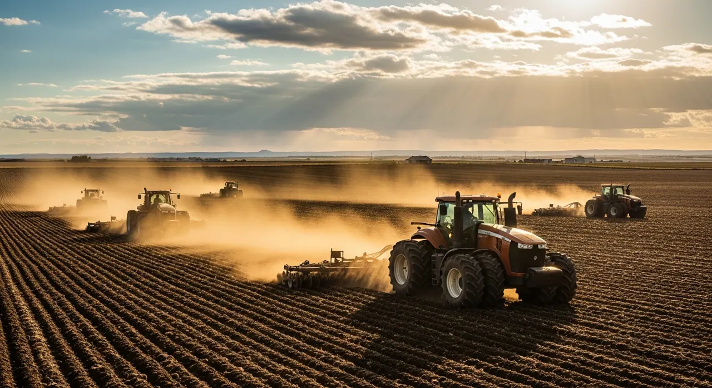

See the work in context.
Compare service categories. Verified project stories will be a separate collection, with actual scope, location and results.
Properties of an acre or moreUpstate South Carolina + Greater CharlotteLand · Water · Ongoing care
Start with the need.
10 illustrations shown

Commercial grounds management
Scope and next steps →
Commercial snow & ice
Scope and next steps →
Industrial & agricultural land
Scope and next steps →
Land clearing & forestry mulching
Scope and next steps →
Grading & site preparation
Scope and next steps →
Drainage solutions
Scope and next steps →
Turf installation & seeding
Scope and next steps →
Tree & brush management
Scope and next steps →
Ponds & waterways
Scope and next steps →
Property reconstruction
Scope and next steps →Project profiles need real evidence.
Service and property-type filters become meaningful when a verified project collection exists. Do not classify an illustration as a commercial, HOA or agricultural P1 job.
Review project profile template →